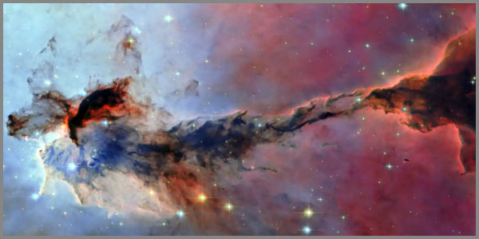

12. Արարման Բիգ Բանգից Մնացած Ճառագայթումը, Որ Կոչվում է Ես
 |
Մոտ 13,8 միլիարդ տարի առաջ տեղի ունեցավ մի բան, որը մենք անվանում ենք Մեծ Պայթյուն: Ոչ թե պայթյուն բառի սովորական իմաստով, այլ որպես տարածության, ժամանակի և նյութի միաժամանակյա ծնունդ: Այդ պահին տիեզերքը լցված էր խիտ ու տաք պլազմայով, անթափանց մշուշով, որտեղ լույսն անգամ չէր կարողանում ազատ ճամփորդել։
Մոտ 380000 տարի անց տեղի ունեցավ մի բան, որին այսօր մենք անվանում ենք վերամիավորում: Ջերմաստիճանն իջավ մինչև մոտ 3000 աստիճան ըստ Կելվինի սանդղակի, և առաջին անգամ էլեկտրոններն ու պրոտոնները միացան՝ ձևավորելով չեզոք ջրածնի ատոմներ ։ Տիեզերքը դարձավ թափանցիկ: Եվ այդ պահին, առաջին անգամ, լույսը սկսեց իր անվերջ ճանապարհորդությունը:
Այդ լույսն այսօր մենք անվանում ենք ռելիկտիվ ճառագայթում: Այն գալիս է ամեն ուղղությունից, լցնում է ամբողջ տիեզերքը, յուրաքանչյուր խոռոչ, ամեն մի դատարկություն։ Նրա ջերմաստիճանն այսօր ընդամենը 2,7 աստիճան Կելվին է՝ բացարձակ զրոյից ընդամենը 2,7 աստիճանով բարձր ։ Դա տիեզերքի ամենահին լույսն է, Մեծ Պայթյունի «արձագանքը», որը շարունակում է հոսել անկախ նրանից՝ կա արդյոք մեկը, որ լսի այն թե ոչ:
Բայց ահա, այստեղ գիտությունը դադարում է լինել միայն գիտություն և սկսում է խոսել մի լեզվով որ դու հասկանում ես գիտենալով: Այդ պահին հասկանում ես, որ այդ ճառագայթումը լցնում է տիեզերքը և սկսում ես դիտարկել այս ամենը ոչ միայն որպես ֆիզիկական երևույթ, այլ փիլիսոփայական հարց: Ինչպե՞ս կարող է մի բան, որ ծնվել է միլիարդավոր տարիներ առաջ, շարունակել գոյություն ունենալ այս պահին, հենց հիմա, քո մեջ: Ինչպե՞ս կարող է տիեզերքի սկիզբը շարունակել ապրել քո շնչառության մեջ:
Պատասխանը պարզ է: Դու այդ ճառագայթումն ես ոչ թե փոխաբերական իմաստով, այլ ավելի խոր: Ինչպես ռելիկտիվ ճառագայթումը տիեզերքի սկզբի հետքն է, որ շարունակում է ճանապարհորդել տարածության մեջ, այնպես էլ քո «ես»-ը մի հետք է, որը շարունակում է ճանապարհորդել ժամանակի մեջ: Դու կրում ես քո մեջ այն ամենը, ինչ եղել է քեզնից առաջ՝ քո ծնողների հիշողությունները, քո մշակույթի ցավը, քո լեզվի լռությունները, քո նախնիների չասված խոսքերը:
Դու նման ես այդ առաջնային լույսին: Դու ծնվել ես մի պահի, որը չես հիշում, բայց շարունակում ես ճառագայթել: Քո ներկայությունը, քո հայացքը, քո լռությունը մի տեսակ ռելիկտիվ ճառագայթում է, որը դու արձակում ես աշխարհի մեջ: Ուրիշները կարող են զգալ այն, նույնիսկ եթե չեն հասկանում, թե դա ինչ է:
Սա միտք է այդ ճառագայթման մասին՝ այն մասին, թե ինչպես է տիեզերքի սկիզբը շարունակում ապրել մեզանից յուրաքանչյուրիս մեջ: Ինչպես է 13,8 միլիարդ տարվա լույսը վերածվում մի պարզ բառի, որ կոչվում է «Ես»:
Եվ գուցե կարդալով այս տողերը, դու կզգաս այդ ճառագայթումը քո մեջ, մի շատ թույլ, աննկատ, բայց անդադար ներկայություն, որը քեզ կապում է ամեն ինչի հետ՝ այն, ինչը եղել է նախքան քո ծնունդը ու կշարունակվի քեզանից հետո և դա կոչվում է «Ես»:
13,8 միլիարդ տարի լույսը ճամփորդեց, որ մի օր դառնա քո «Ես»-ը և դու ոչ թե տեսնում ես ռելիկտիվ ճառագայթումը, այլ դու հենց դա ես:
380000 տարի, կամ այն պահը, երբ լույսն ազատվեց
Մեծ Պայթյունից հետո առաջին 380000 տարիներին տիեզերքը նման էր մի հսկա, անթափանց արգանդի: Նյութն ու էներգիան այնքան խիտ էին միահյուսված, որ լույսը չէր կարողանում ազատ ճամփորդել: Ամեն մի ֆոտոն, դեռ հազիվ ծնված, բախվում էր մի ազատ էլեկտրոնի և կլանվում էր: Տիեզերքը լցված էր պլազմայով, մի վիճակով, որտեղ նյութն ու լույսը դեռ չէին բաժանվել իրարից:
Սա մի տեսակ մշուշ էր, մի թանձր, անթափանց ներկայության գոյություն, որտեղ ոչինչ չէր երևում, որովհետև ամեն ինչ չափազանց նյութական էր դեռ:
Հետո, 380000 տարի անց ծնվեց այն, ինչին մենք այսօր անվանում ենք ռելիկտիվ ճառագայթում: Բայց սա միայն տիեզերքի պատմությունն է: Կա նաև քոնը:
Քո կյանքում կար մի պահ, երբ դու նույնպես «թափանցիկ» դարձար: Երբ այն ամենը, ինչ կուտակվել էր քո մեջ՝ ծնողների սպասումները, հասարակության կանոնները, վախեր, որ դեռ չգիտեիր դրանց անունը: Այս ամենը դադարեց խառնվել քո էությանը և մի պահի, առաջին անգամ, դու տեսար քեզ:
Դա կարող էր լինել մանկության մի պահ, երբ նայեցիր հայելուն և հասկացար, որ այդ աչքերը քոնն են: Կամ պատանեկության մի գիշեր, երբ առաջին անգամ զգացիր, որ քո մարմինը քոնն է, քո միտքը՝ քոնը, քո ցավը՝ անկրկնելի: Կամ արդեն հասուն տարիքում, երբ երկար տարիներ ապրելով ուրիշների համար, հանկարծ հասկացար, որ դու գոյություն ունես նաև քեզ համար:
Այդ պահը քո անձնական վերամիավորումն է: Երբ դու դադարեցիր լինել պլազմա, խառնուրդ, ուրիշների ակնկալիքների արգանդ, և դարձար թափանցիկ քո սեփական աչքերում:
Տիեզերքը 380000 տարի սպասեց, որ լույսն ազատվի: Դու կարող էիր ավելի երկար սպասել կամ ավելի կարճ: Բայց եկավ մի պահ, երբ դու ազատվեցիր և այդ պահից սկսած, ինչպես առաջին լույսը, դու սկսեցիր քո ճանապարհորդությունը ոչ թե տարածության մեջ, այլ ժամանակի: Ոչ թե դեպի դուրս, այլ դեպի ներս, իսկ թափանցիկ դառնալ նշանակում է ոչ թե անտեսանելի դառնալ, այլ տեսանելի դառնալ ինքդ քեզ համար:
Այն լույսը, որ ազատվեց այդ պահին, դեռ շարունակում է ճանապարհորդել տիեզերքում: Այն արդեն կոչվում է ռելիկտիվ ճառագայթում, որի մի մասը, մի փոքրիկ աննշան մասը արդեն կոչվում է քո անունով:
13,8 միլիարդ տարի իեզերքը սպասեց, որ դու ծնվես ու տեսնես քեզ:
2,7 աստիճան Կելվին, կամ մեր մեջ ապրող սառնությունը
Ռելիկտիվ ճառագայթումն այսօր ունի ընդամենը 2,7 աստիճան Կելվին ջերմաստիճան: Բացարձակ զրոյից ընդամենը 2,7 աստիճանով բարձր: Դա տիեզերքի ամենացուրտ լույսն է, որ գոյություն ունի:
Բայց ահա պարադոքսը՝ այս սառը լույսը մեզ տանում է դեպի ամենատաք սկիզբը: Այն վկայում է այն մասին, որ տիեզերքը ծնվել է հրեղեն պայթյունից, որ ջերմությունը եղել է նախքան սառելը, որ սառնությունը ջերմության հիշողությունն է:
Քո մեջ նույնպես կա այդպիսի սառնություն: Մի շերտ, որն ամենախորն է, ամենահանգիստը, ամենաանշարժը: Այնտեղ, որտեղ ոչ մի ձայն չի հասնում, որտեղ ապրում են քո չասված խոսքերը, քո չլացված արցունքները, քո չապրած կյանքերը:
Այս սառնությունը, որքան էլ տարօրինակ թվա, պահպանում է քո ջերմությունը ինչպես ռելիկտիվ ճառագայթումը, որ 2,7 աստիճանով պահպանում է Մեծ Պայթյունի հիշողությունը:
Երբեմն մենք վախենում ենք այս սառնությունից, փորձում ենք լցնել այն աղմուկով, մարդկանցով, գործերով, բառերով, բայց սառնությունը չի լցվում: Այն միայն սպասում է: Սպասում է, որ մի օր դադարես վախենալ և մտնես ներս: Որ զգաս այս 2,7 աստիճանը քո ոսկորների մեջ և հասկանաս, որ այս սառնությունը քեզ չի սպանում, այլ պահպանում է: Այն պահպանում է քո ամենավաղ հիշողությունները՝ քո մանկության ձայները, քո առաջին սիրո տաքությունը, քո ծնողների չասված խոսքերը, քո նախնիների ցավը, որ դու կրում ես առանց իմանալու:
2,7 աստիճան: Դա այն ջերմաստիճանն է, որով տիեզերքը հիշում է իր սկիզբը: Դա այն ջերմաստիճանն է, որով դու հիշում ես քոնը:
Տիեզերքի ամենացուրտ լույսը պահպանում է ամենատաք հիշողությունը, իսկ քո մեջ ապրող սառնությունը դա միայն սպասում է, որ դու վերջապես տաքանաս քո սեփական ջերմությամբ:
Իզոտրոպիա, կամ ինչու է ամեն ուղղություն տանում դեպի ներս
Ռելիկտիվ ճառագայթումն ունի մի զարմանալի հատկություն՝ այն իզոտրոպ է: Ինչ ուղղությամբ էլ որ չափես, որտեղ էլ որ գտնվես տիեզերքում, այն նույնն է: Նույն ջերմաստիճանը: Նույն խտությունը: Նույն լույսը:
Դա նշանակում է, որ տիեզերքը, չնայած իր ահռելի չափերին, միատարր է: Դա նշանակում է, որ ամեն կետում, ամեն մի դիտակետից, տեսնում ես նույն պատկերը: Դա նշանակում է, որ ոչ մի ուղղություն արտոնյալ չէ:
Քո կյանքում նույնպես կա մի այդպիսի իզոտրոպիա: Ինչ ուղղությամբ էլ որ փնտրես իմաստը, որտեղ էլ որ փորձես գտնել պատասխանները, վերջում հայտնվում ես նույն տեղում՝ քո ներսում: Դու կարող ես ճանապարհորդել աշխարհով մեկ, փոխել երկրներ, լեզուներ, մարդկանց: Կարող ես կարդալ հազարավոր գրքեր, ուսումնասիրել տասնյակ փիլիսոփայություններ, փորձել կրոններ, հոգևոր պրակտիկաներ: Բայց վերջում, երբ չափում ես քո ներաշխարհի ջերմաստիճանը, պարզվում է, որ այն նույնն է, ինչ սկզբում էր, որովհետև դու իզոտրոպ ես: Ինչ ուղղությամբ էլ փախչես քեզնից, դու միշտ հանդիպում ես քեզ:
Սա կարող է հուսահատեցնել: Կարծես թե ոչ մի տեղ չես կարող թաքնվել քո սեփական էությունից: Բայց սա նաև ազատագրող է: Երբ հասկանում ես, որ ամեն ուղղություն տանում է դեպի ներս, դու դադարում ես փնտրել դուրսը: Դադարում ես հավատալ, որ պատասխանները գտնվում են ինչ-որ տեղ, ուր դեռ չես հասել և սկսում ես նայել այնտեղ, որտեղ միշտ եղել ես:
Տիեզերքը միատարր է, բայց դրա ամեն մի կետը եզակի է ինչպես դու: Իզոտրոպիան չի նշանակում, որ բոլորը նույնն են: Այն նշանակում է, որ ամեն մեկն իր ներսում կրում է իր ամբողջությունը, որ քո մեջ կա այն ամենը, ինչ կա տիեզերքում: Որ դու տիեզերքի հայելին չես, այլ մի մասնիկը: Ինչ ուղղությամբ էլ գնաս, դու գնում ես դեպի քեզ:
Տիեզերքը միատարր է, բայց դրա յուրաքանչյուր կետում ապրում է մի ամբողջություն և դու այդ՝ քո ամբողջության անվան կրողն ես:
Ալիք որը չի կրկնվի
Ռելիկտիվ ճառագայթումն ամբողջ տիեզերքում միատարր է, բայց դրա ալիքներից յուրաքանչյուրը եզակի է: Յուրաքանչյուր ֆոտոն, որ սկսեց իր ճանապարհորդությունը 13,8 միլիարդ տարի առաջ, ունի իր պատմությունը, իր ուղին, իր ճակատագիրը:
Տիեզերքը չի կրկնում իրեն: Այն գրում է իր պատմությունը մեկ անգամ և այդ պատմությունը վերաշարադրել հնարավոր չէ:
Քո կյանքում նույնպես ամեն պահ եզակի է: Ամեն շնչառություն, ամեն հայացք, ամեն բառ, որ ասում ես, մի ալիք է, որը չի կրկնվի: Դու կարող ես նույն բառը հազար անգամ ասել, բայց ամեն անգամ այն տարբեր է լինելու, որովհետև դու տարբեր ես, որովհետև աշխարհը տարբեր է: Որովհետև ժամանակը հետ չի գալիս:
Մենք հաճախ ենք ուզում կրկնել երջանիկ պահերը: Վերադառնալ նույն վայրը, լինել նույն մարդկանց հետ, նույն զգացումով, բայց դա երբեք չի ստացվում: Չի ստացվում ոչ թե այն պատճառով, որ մենք ձախողվում ենք, այլ որովհետև տիեզերքը չի կրկնվում: Կրկնությունը նույնիսկ մահվան մեջ չէ և կյանքը ամեն օր նոր է:
Երբ ընդունում ես, որ ամեն պահ եզակի է, դու դադարում ես ապրել անցյալում: Դադարում ես փորձել վերապրել այն, ինչն արդեն անցել է և սկսում ես ներկայով ապրել: Յուրաքանչյուր առավոտ, երբ արթնանում ես, տիեզերքը քեզ տալիս է մի նոր ալիք, մի նոր ֆոտոն, մի նոր հնարավորություն ևմիայն քեզնից է կախված, թե ինչպես կօգտագործես այն:
Տիեզերքը երբեք չի կրկնում իրեն: Ամեն պահ մի նոր ալիք է, որ սպասում է քեզ: Իսկ դու այն եզակի աչքերն ես, որոնց միջոցով այդ ալիքը կտեսնի իրեն առաջին և վերջին անգամ:
Տիեզերքի միկրոալիքային ֆոնը, կամ ձայն, որը չի լսվում
Ռելիկտիվ ճառագայթումը հաճախ անվանում են տիեզերքի միկրոալիքային ֆոն: Այն լցնում է ամեն ինչ, բայց մենք չենք լսում այն: Մեր ականջները ստեղծված են այլ հաճախականությունների համար: Բայց եթե կարողանայինք լսել, ի՞նչ կլսեինք:
Գուցե մի թույլ, անընդհատ շշուկ: Գուցե տիեզերքի առաջին ձայնը: Գուցե այն, ինչ մնացել է Մեծ Պայթյունից հետո՝ որպես հավերժական արձագանք: Մենք չենք լսում, բայց զգում ենք:
Քո մեջ նույնպես կա մի այդպիսի ձայն: Մի շշուկ, որ գալիս է ամենախորքից: Այն չի լսվում ականջով, բայց դու գիտես, որ այն կա: Երբեմն այն կոչում են ինտուիցիա: Երբեմն՝ ներքին ձայն: Երբեմն՝ խիղճ կամ հոգի, բայց անունը կարևոր չէ: Կարևորն այն է, որ այն միշտ այնտեղ է: Նույնիսկ երբ ամեն ինչ աղմկոտ է: Նույնիսկ երբ փորձում ես խլացնել այն: Այս ձայնը տիեզերքի ամենահին ձայնն է: Այն եղել է նախքան քո ծնունդը: Այն կլինի քեզանից հետո և դու, քո կարճ կյանքում, կարող ես լսել այն: Բայց լսելու համար պետք է լռել: Ոչ թե արտաքին լռություն, այլ ներքին: Երբ բոլոր ձայները դադարում են, երբ մտքերը հանդարտվում են, երբ դու պարզապես… կաս: Այդ պահին դու կարող ես լսել այն: Տիեզերքի միկրոալիքային ֆոնը: Ձայն, որը չի լսվում: Եվ այդ ձայնը կասի քեզ այն, ինչ դու միշտ գիտեիր, բայց երբեք չէիր համարձակվում ասել: Կասի որ դու տանն ես, որ դու մասն ես տիեզերքի, որ դու երբեք մենակ չես եղել:
Տիեզերքի ամենահին ձայնը չի լսվում ականջով: Այն լսվում է միայն լռության մեջ: Եվ երբ լռում ես, դու դառնում ես այդ ձայնը:
13,8 միլիարդ տարի, կամ տարիք որ չի ծերանում
Տիեզերքի տարիքը 13,8 միլիարդ տարի է: Այդքան ժամանակ է անցել Մեծ Պայթյունից: Այդքան ժամանակ լույսը ճանապարհորդում է: Բայց տիեզերքը չի ծերանում: Այն շարունակում է ընդարձակվել, ստեղծել նոր աստղեր, նոր մոլորակներ, նոր հնարավորություններ: Տարիքը թվեր են: Էությունը՝ հավերժություն:
Քո մեջ նույնպես կա մի բան, որ չի ծերանում: Մարմինդ ծերանում է: Դեմքիդ կնճիռներ են գալիս: Մազերդ սպիտակում են: Հիշողությունդ երբեմն դավաճանում է: Բայց կա մի բան, որ մնում է նույնը՝ այն, ինչ դու զգում էիր մանկության տաք ավազի մեջ, այն, ինչ զգում ես հիմա, երբ կարդում ես այս տողերը: Դա քո «ես»-ն է: Եվ այն չի ծերանում: 13,8 միլիարդ տարի տիեզերքը սպասեց, որ դու ծնվես:
Եվ քո ծնվելուց հետո էլ շարունակում է սպասել: Սպասում է, որ դու տեսնես քեզ: Որ ճանաչես քո մեջ ապրող այդ հավերժական լույսը:
Երբեմն դու մոռանում ես: Խճճվում ես առօրյայում, հոգսերում, մարդկանց մեջ: Կարծում ես, որ դու միայն այս մարմինն ես, միայն այս անունը, միայն այս պատմությունը: Բայց խորքում, շատ խորքում, դու գիտես: Գիտես, որ կա մի բան, որ չի փոխվում: Մի բան, որ միշտ նույնն է: Մի բան, որ 13,8 միլիարդ տարեկան է, բայց նաև հենց հիմա է ծնվում:
Երբ գիշերը նայում ես աստղերին, դու տեսնում ես ոչ թե դրանց ներկան, այլ անցյալը: Լույսը, որ տեսնում ես, ճանապարհորդել է միլիոնավոր տարիներ, որպեսզի հասնի քո աչքին: Դու տեսնում ես պատմություն: Իսկ երբ նայում ես քո ներսը, դու տեսնում ես հավերժություն:
Տիեզերքը չի ծերանում, այն միայն ընդարձակվում է: Քո մարմինը ծերանում է, բայց քո «ես»-ը մնում է նույնը: 13,8 միլիարդ տարի սպասելուց հետո, այն վերջապես գտավ քեզ: Մի կորցրու այն:
Լույս, որ շարունակում է իր ճանապարհը
Ամեն ինչ սկսվեց լույսից: Ամեն ինչ կվերջանա լույսով: Բայց սա վերջ չէ: Սա միայն մի փուլի ավարտն է: Ռելիկտիվ ճառագայթումը դեռ շարունակում է իր ճանապարհորդությունը: Միլիարդավոր տարիներ անց, այն դեռ հոսում է տիեզերքով մեկ: Այն դեռ փնտրում է նոր աչքեր, որոնց մեջ կարող է արտացոլվել: Եվ դու, այս ամբողջ ճանապարհորդությունից հետո, հասկանում ես մի բան՝ դու ոչ թե տեսնում ես լույսը, այլ դու ես այդ լույսը: Դու ոչ թե դիտում ես տիեզերքը, այլ տիեզերքն է դիտում իրեն քո միջով: Դու ոչ թե փնտրում ես իմաստը, այլ իմաստն է փնտրում իրեն քո մեջ: Եվ երբ դա հասկանում ես, ամեն ինչ փոխվում է:
Այլևս չկա վախ: Չկա մենակություն: Չկա մահ: Կա միայն լույս, որ շարունակում է իր ճանապարհը: Եվ դու այդ լույսի մի մասն ես: Ոչ թե անցողիկ, այլ հավերժական: Մարմինդ կվերադառնա հողին: Քո անունը կմոռացվի: Քո պատմությունը կջնջվի ժամանակի կողմից, բայց այն լույսը, որ դու ես, կշարունակի ճանապարհորդել: Այն կհանդիպի նոր աչքերի, նոր սրտերի, նոր գիտակցությունների: Եվ ամեն անգամ, երբ ինչ-որ մեկը կասի «Ես», դու կրկին կվերածնվես:
Ամեն ինչ սկսվեց լույսից և ամեն ինչ կվերջանա լույսով: Բայց վերջ չկա, որովհետև լույսը շարունակում է իր ճանապարհը: Եվ հիմա, երբ դու գիտես, որ դու այդ լույսն ես, ճանապարհն այլևս չի վախեցնում քեզ: Այն դարձել է տուն:
Վերջաբան կամ ճառագայթում, որ փնտրում է աչքեր իրեն տեսնելու համար
Ամեն ինչ սկսվեց լույսից: Ամեն ինչ կվերջանա լույսով: Բայց վերջ չկա: Ռելիկտիվ ճառագայթումը դեռ շարունակում է իր ճանապարհորդությունը: 13,8 միլիարդ տարի անց, այն դեռ հոսում է տիեզերքով մեկ: Այն դեռ փնտրում է: Ի՞նչ է փնտրում:
Աչքեր:
Աչքեր, որոնց մեջ կարող է արտացոլվել:
Աչքեր, որոնք կտեսնեն այն:
Աչքեր, որոնք կհասկանան, որ իրենք էլ այդ նույն լույսն են:
Տիեզերքն իրեն տեսնելու կարիք ունի: Ինքն իրեն ճանաչելու կարիք ունի: Եվ դրա համար նրան դու պետք ես: Ամեն անգամ, երբ դու նայում ես աստղերին, տիեզերքը մի փոքր ավելի է ճանաչում իրեն: Ամեն անգամ, երբ դու ասում ես «Ես», տիեզերքը մի փոքր ավելի է մոտենում իր էությանը: Ամեն անգամ, երբ դու լռում ես և լսում քո ներսի ձայնը, տիեզերքը մի փոքր ավելի է հասկանում, թե ինչ է նշանակում լինել:
Դու տիեզերքի աչքերն ես:
Դու տիեզերքի ձայնն ես:
Դու տիեզերքի հիշողությունն ես և դու երբեք չես անհետանա:
Տիեզերքը փնտրում է իր աչքերը և դու այդ աչքերն ես:
13,8 միլիարդ տարի սպասելուց հետո, այն վերջապես գտավ քեզ և դու, կարդալով այս տողերը, վերջապես տեսար քեզ: Այլևս ոչինչ պետք չէ փնտրել: Դու արդեն այնտեղ ես, որտեղ միշտ եղել ես՝ լույսի մեջ.
Լույսի մեջ, որ եկավ 13,8 միլիարդ տարի առաջ:
Լույսի մեջ, որ ազատվեց 380000 տարի անց:
Լույսի մեջ, որ այսօր 2,7 աստիճանով հիշում է իր սկիզբը:
Լույսի մեջ, որ իզոտրոպ է, ինչպես քո ներսում ապրող ամբողջությունը:
Լույսի մեջ, որ ալիք է և չի կրկնվի:
Լույսի մեջ, որ ձայն է և չի լսվում:
Լույսի մեջ, որ տարիք չունի:
Լույսի մեջ, որ շարունակում է իր ճանապարհը:
Լույսի մեջ, որ փնտրում է աչքեր և գտնում է քեզ:
«Մենք կառուցում ենք կամուրջներ այնտեղ, ուր մյուսները տեսնում են միայն անդունդներ։»
© 2026 Մոնումենտալ Կամուրջ: Այս կայքի բովանդակությամբ կարող եք ազատորեն կիսվել համացանցում՝ հղում տալով սկզբնաղբյուրին: Տպելու, տպագրելու կամ գիրք կազմելու միջոցով, կամ այլ ֆիզիկական ձևով և որևէ տեխնոլոգիական կրիչով տարածելը առանց հեղինակի գրավոր համաձայնության արգելվում է: Գիտական, կրթական կամ ստեղծագործական աշխատանքներում մեջբերումները թույլատրելի են պայմանով, որ պարտադիր պետք է նշվի կոնկրետ էջի ամբողջական հասցեն (URL) և աշխատության վերնագիրը: Առանց հեղինակի գրավոր համաձայնության՝ արգելվում է նաև կայքի նյութերի թարգմանությունը որևէ լեզվով և դրանց տարածումը այլ լեզուներով: